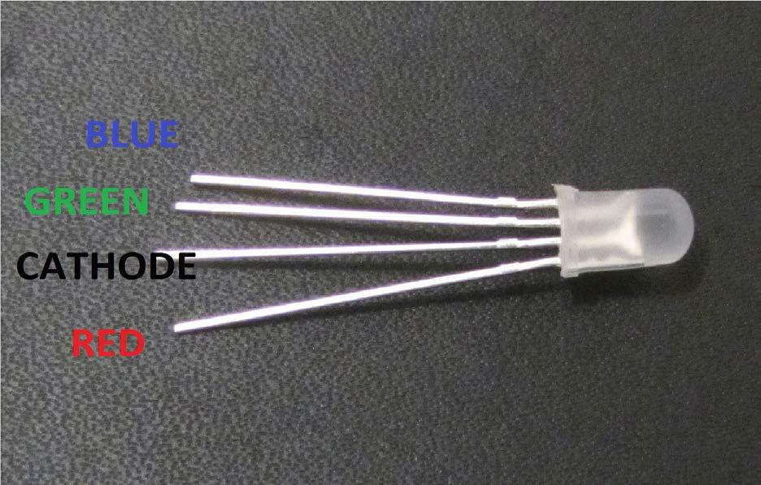
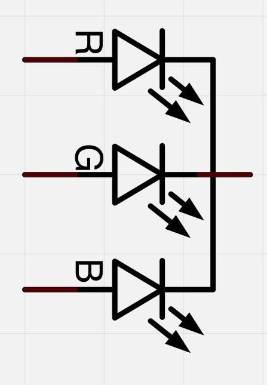
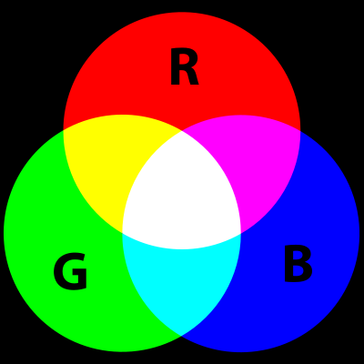

RGB LED son una forma divertida y fácil para agregar color a nuestros proyectos. Puesto
que es como regular 3 LED en uno, ademas el uso y conexión no es muy diferente a lo visto
anteriormente.
Vienen en 2 versiones: ánodo común o cátodo común.
Ánodo común utiliza 5V en el pin común, mientras que el cátodo común se conecta
a tierra.
Como con cualquier LED, tenemos que conectar algunas resistencias en línea (3 total)
así podemos limitar la corriente absorbida.
En nuestro script, se comienzan con el LED en el estado de color rojo, entonces
se descolora a verde, luego se descolora azul y finalmente hacia el color rojo.
(1) x Elegoo Uno R3
(1) x Protoboard
(4) x M M cables (cables de puente de macho a macho)
(1) x RGB LED
(3) x Resistencias de 220 ohmios
A primera vista los LEDs RGB (rojo, verde y azul) parecen LEDs comunes, sin embargo,
dentro hay realmente tres LEDs, uno rojo, uno
verde y sí, uno azul.
Controlando el brillo de cada uno de los LEDs individuales, podemos mezclar prácticamente
cualquier color que deseemos.
Mezclamos colores del mismo modo que lo haríamos al mezclar pintura en una paleta, en este caso ajustando
el brillo de cada uno de los tres LEDs.
La manera difícil para hacer esto sería usar diferentes resistencias (o resistencias variables) como hicimos con el en la
lección 2, pero esto es un mucho trabajo!, Afortunadamente para nosotros, arduino tiene una función analogWrite
que se pueden utilizar en los pines marcados con un ~, en lo que podemos regular la cantidad de energía apropiada para los LED.
El LED RGB tiene cuatro patillas conectoras, hay una patilla a la conexión positiva de cada
uno de los LEDs individuales y un patilla única que está conectada a los tres lados negativos de los LEDs.

Su esquema eléctrico es este:

En las fotografías podemos ver 4 diodos LED, cada una de las patillas con colores verde,
azul o de rojo se llaman ánodo y siempre se conectarán al polo positivo «+». El cátodo va al polo
negativo «-» (tierra), si se conecta de una forma diferente el LED no se encenderá.
La conexión negativa del diodo LED es la patilla es el más larga de las cuatro patas y se conectarán a la tierra.
Cada LED dentro del diodo, requiere su propio resistor de 220Ω para prevenir
demasiada corriente que fluya a través de él. Los tres conductores del positivo de
los LEDs (uno rojo, uno verde y uno azul) están conectados a los pines de salida.
La razón por la que podemos mezclar cualquier color, es por que el ojo y el cerebro procesan
las cantidades de rojo, verde y azul, para luego convertirlas en un espectro de color.
En cierto modo, mediante el uso de los tres LEDs, estamos jugando un truco en el
ojo. Esta misma idea se utiliza en televisores, donde la pantalla LCD tiene puntos de
color rojo, verde y azul junto a unos a otros componen cada píxel.

Si establece el brillo de todos los tres LEDs al mismo tiempo, el color generado de la luz será blanco. Si apagamos el LED azul y dejamos sólo los LEDs rojo y verde con mismo brillo, la luz generada será amarilla.